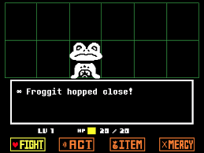

Undertale is a jrpg inspired game created by Toby Fox(Code and Composition) and Temmy Chang(Artist).
The Game is about a child(supposedly named chara) of no specific gender who goes exploring as he questions himself/herself. On his way he trips over and falls into a deep pit.

Opening scene

In game battle
The main character then finds themself in an interesting adventure with many moral dilemmas, challenges and many potential new friends or foes.
Undertale was Created by Toby Fox. Toby Fox previously worked on
making video game hacks(his best known hack is an earthbound haloween hack)

Toby's earthbound hack
. He decided to create Undertale which had a unique RPG mechanic of being able to
spare your enemies. The game saw a successful kickstarter(Crowd Funding campaign)
raising $50,000. It was released on 15th September 2015 and managed to sell
over 20million copies. He recently released a spiritual successor to the game called Deltarune.
Despite its odd graphics undertale packs a wholesome story, a great adventure and one of the best sound tracks in a video game. Undertale is available on steam and the official site.